stagnation_inverse
Determines the local Mach number given some stagnation-to-static ratio.
Back to Compressible Flow Toolbox Contents
Contents
Syntax
M = stagnation_inverse('Tt/T',Tt_T) M = stagnation_inverse('Pt/P',Pt_p) M = stagnation_inverse('rhot/rho',rhot_rho) M = stagnation_inverse('at/a',at_a) M = stagnation_inverse('ht/h',ht_h) M = stagnation_inverse(__,gamma)
Input/Output Parameters
| Symbol | Variable | Description | Format | |
| Input | - | spec | specifies input quantity (see options below) | 1×1 char |
| Q_in | input quantity (specified by spec) | 1D double array |
||
| gamma | (OPTIONAL) specific heat ratio, defaults to 1.4 | 1×1 double |
||
| Output | M | local Mach number | 1D double array |
Options for spec:
- 'Tt/T' = stagnation-to-static temperature ratio (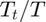)
- 'Pt/P' = stagnation-to-static pressure ratio (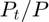)
- 'rhot/rho' = stagnation-to-static density ratio (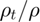)
- 'at/a' = stagnation-to-static speed of sound ratio (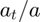)
- 'ht/h' = stagnation-to-static enthalpy ratio (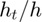)
Examples
Mach number from all stagnation-to-static ratios (in air).
Local Mach number (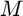) for 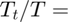.
M = stagnation_inverse('Tt/T',2.8000)
M =
3
Local Mach number () for 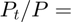.
M = stagnation_inverse('Pt/P',36.7327)
M =
3.0000
Local Mach number () for 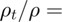.
M = stagnation_inverse('rhot/rho',13.1188)
M =
3.0000
Local Mach number () for 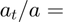.
M = stagnation_inverse('at/a',1.6733)
M =
2.9999
Local Mach number () for 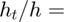.
M = stagnation_inverse('ht/h',2.8000)
M =
3